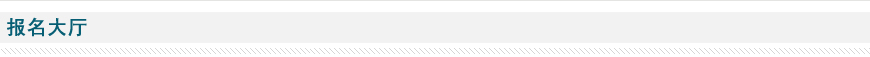
*信息为注册必填项。所收集信息是为了方便您参与会员活动，接收邀请通知，奖品递送以及密码等个人信息找回时使用，不会将您的个人信息出售或出租给其他人。
*您的邮箱：
（用于登录及接收会员专刊及专属活动通知等）
（用于登录及接收会员专刊及专属活动通知等）
*您在公司或组织中担任的职务：
*真实姓名：
*公司分类：
*移动电话：
公司地址：
*座机电话：
邮政编码：
*公司名称：


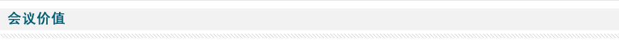


本届渠道论坛共分五个奖项，分别为：
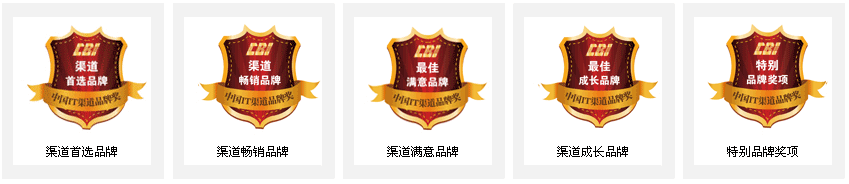

1、“2011 CBI中国IT渠道品牌奖”调查评选活动，拟对目前市场上各主要IT产品线所涉及的品牌进行评比、推荐与介绍。
2、上述产品线，在具体评定时，可根据技术类别、使用属性、用户群体、价格段等指标对参评品牌或子品牌进一步细分。
2、上述产品线，在具体评定时，可根据技术类别、使用属性、用户群体、价格段等指标对参评品牌或子品牌进一步细分。
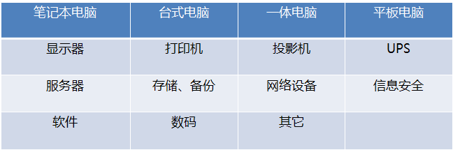
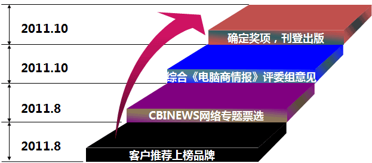
1、“2011 CBI中国IT渠道品牌奖”调查评选活动，拟通过线上及线下两种方式进行调查收集反馈。具体地说，线上方式即通过电脑商情在线（www.cbinews.com）网站发布调查方案及调查问卷，并以在线方式收集调查问卷；线下方式即通过CBIResearch专业调研机构以电话、邮寄问卷、面访等方式进行问卷调查。
2、本次调查评选活动，组委会在对不同层次的渠道商进行多次调查、沟通的基础上，针对渠道商对IT品牌评选普遍关注的问题，提炼出相关的评选指标，之后形成完整的活动评选方案及开发评选投票系统，并通过电脑商情在线（http://www.cbinews.com）网站公开发布，以线上反馈及CBIResearch线下调查所获得的问卷为基础数据，并最终通过加权计算确定上榜品牌。
2、本次调查评选活动，组委会在对不同层次的渠道商进行多次调查、沟通的基础上，针对渠道商对IT品牌评选普遍关注的问题，提炼出相关的评选指标，之后形成完整的活动评选方案及开发评选投票系统，并通过电脑商情在线（http://www.cbinews.com）网站公开发布，以线上反馈及CBIResearch线下调查所获得的问卷为基础数据，并最终通过加权计算确定上榜品牌。

1、第一提及率：在“无提示”状态下，收集渠道商对乐意代理某类产品品牌的第一提及率，即首选品牌的选择状况。
2、Top 3品牌点名率：在“有提示”状态下，收集渠道商对同一市场某类产品的前三大畅销品牌的评估与选择状况。
3、渠道满意度：作为一个综合性指标，渠道满意度主要收集渠道对厂商的产品满意度、对厂商的产品服务满意度、对厂商的价格体系满意度、对厂商的价格策略满意度、对厂商的运作体系满意度等。
4、成长性：主要考察某个品牌的自我生存和发展能力。以渠道的眼光去管窥IT市场的明日之星。
2、Top 3品牌点名率：在“有提示”状态下，收集渠道商对同一市场某类产品的前三大畅销品牌的评估与选择状况。
3、渠道满意度：作为一个综合性指标，渠道满意度主要收集渠道对厂商的产品满意度、对厂商的产品服务满意度、对厂商的价格体系满意度、对厂商的价格策略满意度、对厂商的运作体系满意度等。
4、成长性：主要考察某个品牌的自我生存和发展能力。以渠道的眼光去管窥IT市场的明日之星。
1、本次调查评选活动由资深媒体《电脑商情报》、资深市场研究机构CBIResearch及电脑商情在线（http://www.cbinews.com）网站三方鼎力合作。
2、本次调查评选活动事先与国内外IT厂商及渠道商进行了大量沟通，获得了广泛认同与支持；
3、本次调查评选活动已经具备过去四年的操作经验。
4、本次调查评选活动获得CBI集团高度重视。
2、本次调查评选活动事先与国内外IT厂商及渠道商进行了大量沟通，获得了广泛认同与支持；
3、本次调查评选活动已经具备过去四年的操作经验。
4、本次调查评选活动获得CBI集团高度重视。
2011年是国家“十二五”规划开局第一年。在此大背景之下，由政府主导云计算、物联网、三网融合等建设，为产业带来了巨大的机遇。短期来看，产业新的需求的增长主要来自传统IT设备的改造和转型、新型应用软件的升级、移动互联网的广泛普及，而本土的软硬件生产商、系统集成商、3G应用提供商和云计算平台提供商将在新型产业中面临巨大商机。
可以判断，随着市场不断变化，在厂商和渠道的未来的生态系统中，现有商业协议的关键要素都会有所改变。今年还行得通的做法很可能在未来12个月里就会改变。我们必须理解并接受这一现象。那些能够迅速适应新形势、并基于互信原则实现灵活有效安排的公司，才能更好地利用这次市场转型中出现的各种机会。
这些机会提炼出共性就是“融合、创新和突破”。

【形式创新】：在线渠道论坛
2011.10.18
2011.10.18
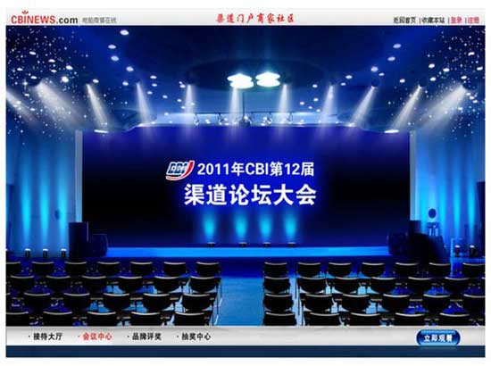
【在线渠道论坛】：简单易用的管理页面，任何人都可以轻松参与渠道论坛。无需任何软硬件安装，观众可以从任何浏览器参与。您可以从个人电脑发起，向各地观众同步展示音频、视频、PPT、Flash、浏览网页、甚至共享整个桌面。会议将邀请200个渠道用户参加，简单易用的服务界面和后台强大的网络平台，确保在线渠道论坛成功召开。

【高质量参会人群】：CBINews网站拥有注册的渠道商家超过4万家，受众主要集中在渠道商和方案商，两者占比高达95%左右。从受众的区域分布来看，主要集中在华北、华东、华南等经济较发达区域，上述三个区域的占比高达65%左右，本次在线渠道论坛每场拟邀请200家渠道商参与，合计有1000家渠道商参与。
【多种方式保证参会质量】：除网上开放注册页面之外，本次在线渠道论坛还准备采用电话邀请的方式进行渠道商邀请，共计邀请500家，其中零售商200家，分销商150家，方案商150家。
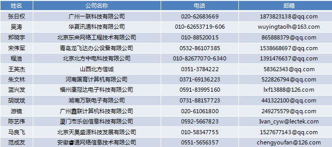


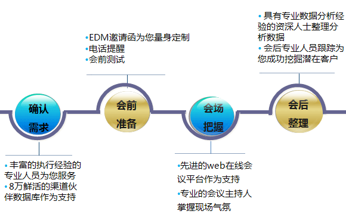
时间：2010年9月底
人物：中国惠普有限公司EB渠道部总监、存储产品部总经理徐志钧
方式：惠普存储在CBINEWS网上会议为他们的渠道商、代理商宣讲渠道政策，进行渠道招募，成功实现销售机会挖掘。
效果：本次网上会议参会人数达到300人次，后续点播超过2000人次。
人物：中国惠普有限公司EB渠道部总监、存储产品部总经理徐志钧
方式：惠普存储在CBINEWS网上会议为他们的渠道商、代理商宣讲渠道政策，进行渠道招募，成功实现销售机会挖掘。
效果：本次网上会议参会人数达到300人次，后续点播超过2000人次。
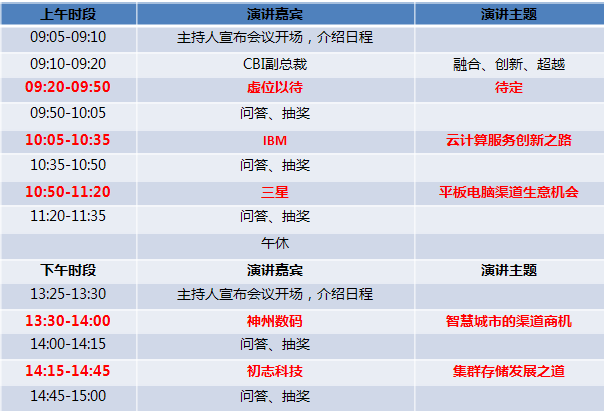


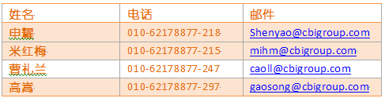
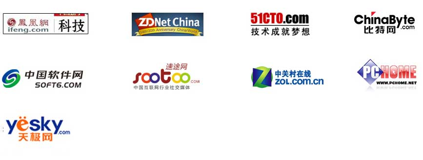